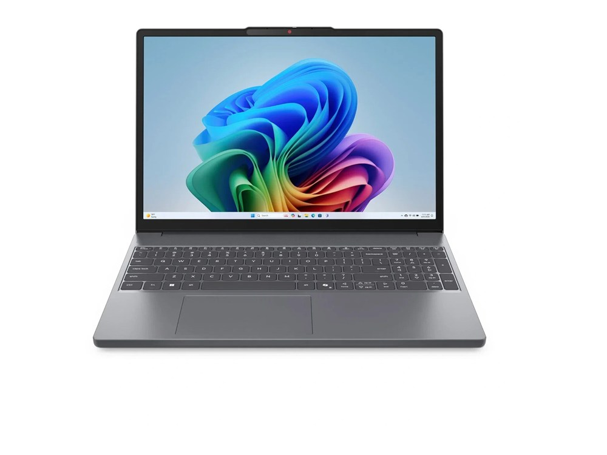
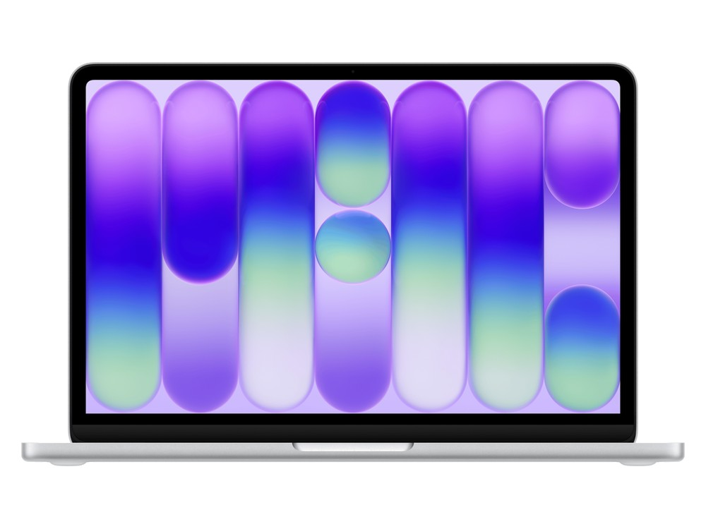
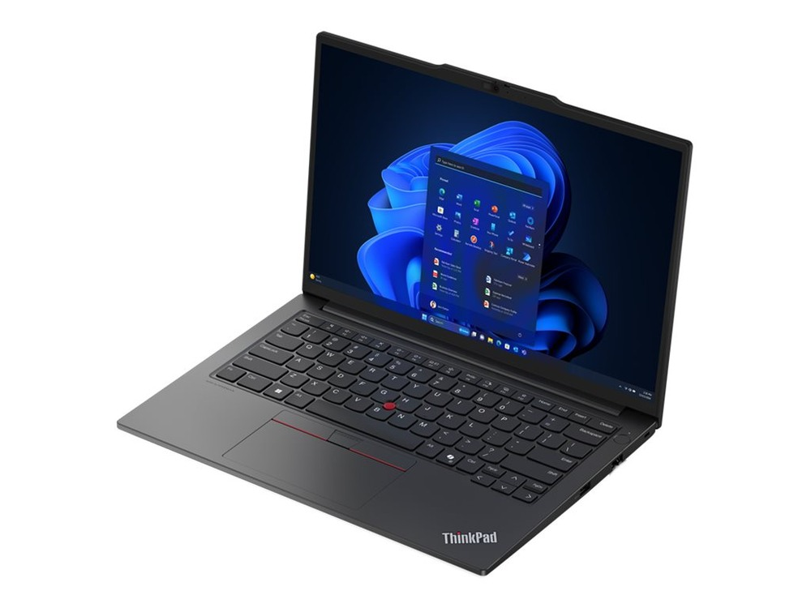

Cómo usar esta guía
Cada modelo lleva dos cifras. El precio de referencia es el precio orientativo del comparador: lo que suele costar fuera de promociones. El precio objetivo está un 12 % por debajo: si lo encuentras por menos, es una oferta que merece la pena. No es el precio de ninguna tienda, sino una referencia nuestra para decidir rápido.
Ocho portátiles que merecen la pena este Black Friday

Lenovo IdeaPad Slim 3 15
Precio de referencia del comparador: 499 €.
El portátil más sensato para clase y ofimática con poco dinero: 16 GB de memoria y 512 GB de disco, que es justo lo que suele faltar en los modelos baratos de Black Friday.
Piensa dos veces si: buscas algo para llevar a diario; con 1,62 kg y 15,6" pesa más que los de 13 o 14 pulgadas.
Ficha del Lenovo IdeaPad Slim 3 15 → Ver precio en Amazon →
Acer Swift Go 14
Precio de referencia del comparador: 749 €.
Pantalla OLED 2.8K a 90 Hz, 1,32 kg y un Core Ultra 5. Es el modelo del catálogo que más da por su precio para estudiar y trabajar.
Piensa dos veces si: pasas el día fuera sin enchufe; anuncia 10 h, de las cifras más bajas del grupo.
Ficha del Acer Swift Go 14 → Ver precio en Amazon →
MacBook Neo (A18 Pro)
Precio de referencia del comparador: 799 €.
La puerta de entrada a macOS: chip A18 Pro, 1,23 kg y 16 h oficiales. Si el descuento lo deja cerca de 700 €, es difícil encontrar algo tan silencioso y con tanta batería.
Piensa dos veces si: abres muchas aplicaciones a la vez: trae 8 GB de memoria y 256 GB de disco, y no se pueden ampliar.
Ficha del MacBook Neo (A18 Pro) → Ver precio en Amazon →
Lenovo ThinkPad E14 Gen 6
Precio de referencia del comparador: 899 €.
Teclado de ThinkPad, 1,41 kg y 90 de 100 en el perfil Trabajo, la misma nota que portátiles de 1.300 €.
Piensa dos veces si: quieres una pantalla vistosa; es correcta, pero no OLED.
Ficha del Lenovo ThinkPad E14 Gen 6 → Ver precio en Amazon →
ASUS Zenbook 14 OLED
Precio de referencia del comparador: 1.099 €.
OLED 3K a 120 Hz, 1 TB de disco y 1,22 kg. Sale en casi todas las comparativas del sitio como el Windows más equilibrado.
Piensa dos veces si: el presupuesto es justo; el Swift Go 14 ofrece una experiencia parecida por bastante menos.
Ficha del ASUS Zenbook 14 OLED → Ver precio en Amazon →
HP Victus 15
Precio de referencia del comparador: 749 €.
Una RTX 4050 por el precio de un portátil normal. Para jugar en 1080p a títulos actuales con ajustes medios, es la forma más barata de empezar.
Piensa dos veces si: quieres jugar a lo último en calidad alta; para eso, mejor una RTX 4060.
Ficha del HP Victus 15 → Ver precio en Amazon →
Lenovo LOQ 15
Precio de referencia del comparador: 999 €.
La RTX 4060 es el punto dulce para jugar en 1080p con ajustes altos, y este es el portátil más barato del catálogo que la lleva.
Piensa dos veces si: lo vas a mover mucho; pesa 2,38 kg.
Ficha del Lenovo LOQ 15 → Ver precio en Amazon →
MacBook Air 13" (M4)
Precio de referencia del comparador: 1.199 €.
M4, 16 GB, 18 h oficiales y sin ventilador. Con el M5 ya a la venta, es el MacBook Air que más fácil es encontrar rebajado.
Piensa dos veces si: guardas muchos archivos en local; 256 GB se llenan rápido.
Ficha del MacBook Air 13" (M4) → Ver precio en Amazon →Tabla de precios objetivo
Los recomendados y algunos más del catálogo, ordenados por precio. Guárdala para comparar cuando veas una oferta.
| Modelo | Referencia | Buena oferta si baja de | Para qué |
|---|---|---|---|
| Acer Chromebook Plus 515 | 449 € | 390 € | Clase y navegador (ChromeOS) |
| Lenovo IdeaPad Slim 3 15 | 499 € | 430 € | Estudiar con poco dinero |
| Acer Swift Go 14 | 749 € | 650 € | Calidad-precio, pantalla OLED |
| ASUS Vivobook 16 | 749 € | 650 € | Pantalla grande para trabajar |
| HP Victus 15 | 749 € | 650 € | Gaming de entrada |
| HP Pavilion Aero 13 | 799 € | 700 € | El más ligero (0,97 kg) |
| MacBook Neo (A18 Pro) | 799 € | 700 € | macOS barato |
| Lenovo ThinkPad E14 Gen 6 | 899 € | 790 € | Trabajo y teclado |
| Lenovo LOQ 15 | 999 € | 870 € | Gaming con RTX 4060 |
| ASUS Zenbook 14 OLED | 1.099 € | 960 € | Windows equilibrado |
| ASUS TUF Gaming A15 | 1.099 € | 960 € | Gaming con RTX 4060 |
| MacBook Air 13" (M4) | 1.199 € | 1.050 € | MacBook Air a buen precio |
| Dell XPS 13 | 1.399 € | 1.230 € | Windows premium |
| MacBook Air 13" (M5) | 1.429 € | 1.250 € | El ligero más potente |
Precio de referencia: orientativo, del comparador. Precio objetivo: un 12 % menos, redondeado a la decena. Ninguno es un precio de tienda.
Cómo detectar una oferta falsa
- El precio tachado. En España, la ley obliga a que el precio anterior de una rebaja sea el más bajo de los últimos 30 días. Si el descuento parece enorme, desconfía igualmente y mira el historial.
- El historial de precios. Keepa y CamelCamelCamel son gratuitos y muestran cómo ha variado el precio de un producto de Amazon en los últimos meses. Si en octubre costaba lo mismo, no es una oferta.
- Modelos antiguos que parecen nuevos. Un procesador de hace dos o tres generaciones puede venderse muy barato y seguir sin ser buena compra. Fíjate en el modelo exacto del procesador y de la gráfica.
- 8 GB de memoria o 256 GB de disco. En Windows, 8 GB se quedan cortos enseguida. Muchos «chollos» son la versión recortada del modelo bueno.
- Sin sistema operativo. Algunos portátiles gaming vienen con FreeDOS, sin Windows. Son más baratos, pero tendrás que instalarlo tú.
Cuándo comprar: calendario
- La semana anterior. Amazon y otras tiendas suelen adelantar parte de las ofertas. Si un modelo ya está por debajo de su precio objetivo, no hace falta esperar.
- Viernes 27 de noviembre: Black Friday. Es el día con más ofertas y también con más demanda: los modelos más buscados se agotan.
- Lunes 30 de noviembre: Cyber Monday. Muchas ofertas se repiten o se mantienen. Es una segunda oportunidad, no una garantía de mejor precio.
¿Dudas entre dos modelos? Las comparativas enfrentan los que más se confunden, y el comparador te dice cuál gana según tu uso. Si buscas por tipo, mira también las guías de portátiles para estudiar, gaming, portátiles ligeros y MacBook o Windows.
Preguntas frecuentes
¿Cuándo es el Black Friday 2026?
El Black Friday 2026 es el viernes 27 de noviembre y el Cyber Monday, el lunes 30 de noviembre. Muchas tiendas, Amazon incluida, empiezan las ofertas varios días antes.
¿Merece la pena comprar un portátil en Black Friday?
Sí, si sabes qué modelo quieres y a qué precio. Es de las mejores épocas del año para comprar portátil, pero también la que más ofertas infladas tiene. Compara el precio con el precio objetivo de esta guía y con su historial antes de comprar.
¿Es mejor esperar al Cyber Monday?
No suele haber gran diferencia: muchas ofertas se mantienen o se repiten. Si un modelo ya está por debajo de su precio objetivo, no merece la pena esperar a que baje 20 € más y arriesgarte a que se agote.
¿Cómo sé si una oferta de Black Friday es real?
En España, la ley obliga a que el precio tachado de una rebaja sea el más bajo de los 30 días anteriores. Aun así, mira el historial de precios con herramientas gratuitas como Keepa o CamelCamelCamel y comprueba que la configuración (procesador, memoria y disco) es la del modelo que buscas.
¿Qué es el precio objetivo de esta guía?
Es una referencia de ComparaPortátil: un 12 % por debajo del precio orientativo del comparador, redondeado a la decena. No es el precio de ninguna tienda; sirve para saber de un vistazo si una oferta merece la pena.
Compáralos antes de comprar
Elige tu perfil y enfrenta dos modelos: verás cuál gana y cuánto cuesta la diferencia.
Abrir el comparador